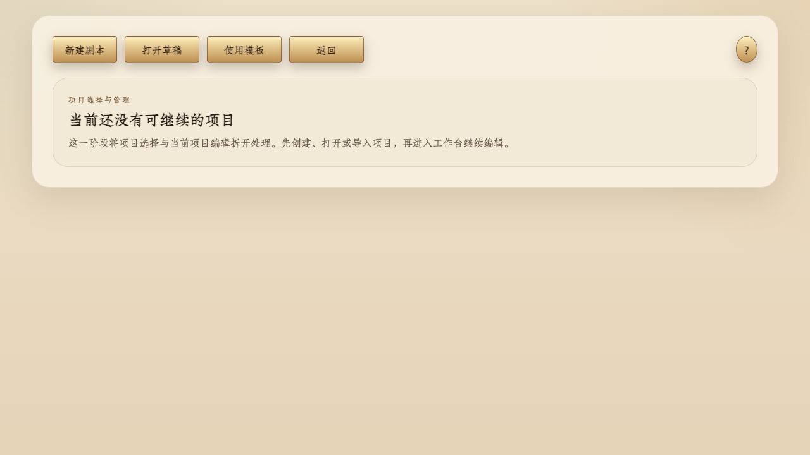
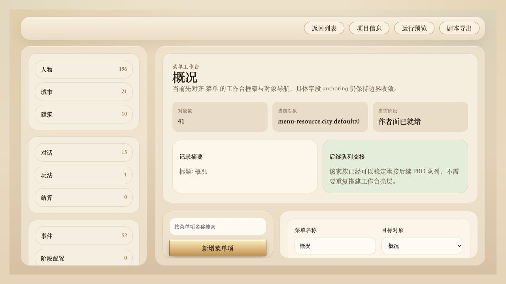
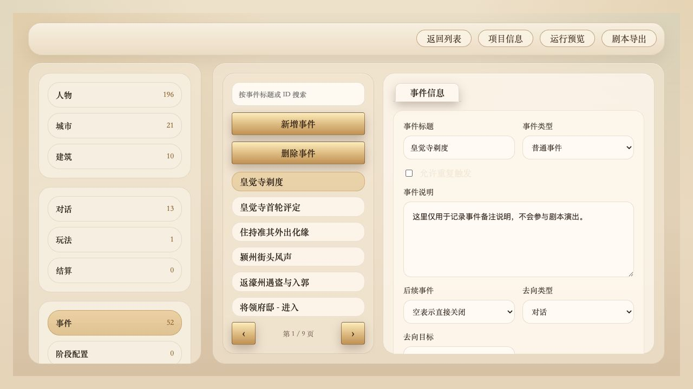
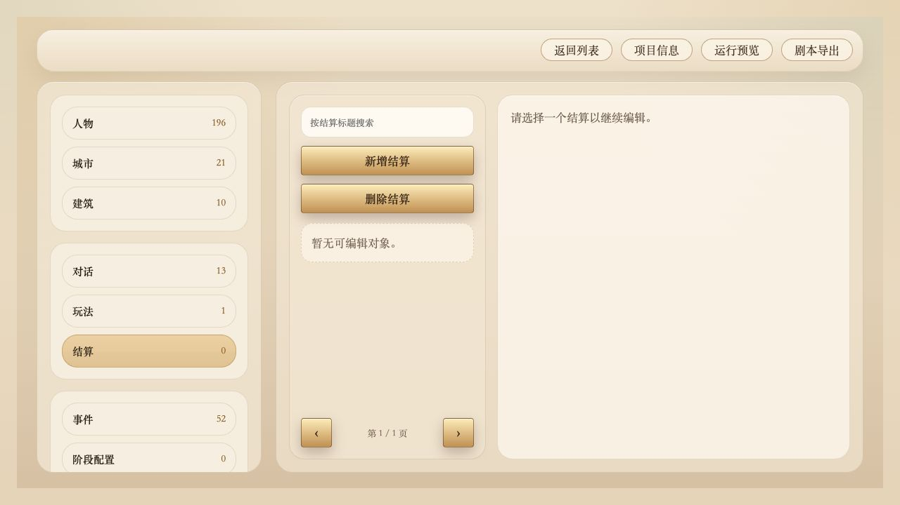

一、剧本编辑器功能说明
这一部分是正式说明书口径。它重点解释编辑器当前有哪些模块、字段是什么意思、下拉框每一项代表什么、以及模块之间如何引用。它不等同于操作教程。
1. 编辑器定位
当前剧本编辑器最适合承担三类工作：
- 建立内容对象：人物、城市、建筑、菜单、事件、玩法、结算。
- 组织内容流程：入口、跳转、去向、后续事件。
- 进行运行前检查：运行预览、导出准备。
它当前不负责底层玩法机制开发，也不适合作为工程字段编辑器。
2. 当前工作台结构
顶部工具栏 → 左侧对象树 → 中间编辑区
项目信息：项目级开局设置。运行预览：把当前编辑器数据转成临时可运行版本。剧本导出：导出为运行时剧本包。

3. 当前可见模块总览
| 模块 | 当前职责 | 说明 |
|---|---|---|
| 项目信息 | 设置开局参数 | 项目级，不是单条剧情级 |
| 人物 | 管理角色档案与自定义属性 | 当前完成度较高 |
| 城市 / 建筑 | 管理世界对象 | 作为人物、入口、玩法的挂载背景 |
| 菜单 | 配置玩家能点到的入口 | 当前主要指向事件 |
| 事件 | 承接流程、决定去向 | 当前最关键的流程模块 |
| 玩法 | 把预制玩法接入项目 | 当前界面仍保留旧字段 |
| 结算 | 组织结果收尾 | 模板项目默认无预置记录 |
| 立绘资源 / 立绘变体 | 提供人物视觉资源 | 会被人物模块引用 |
| 文本 | 管理文本资源 | 作为内容资源库使用 |
4. 模块之间的引用关系
当前最核心的一条引用链是：
菜单 → 事件 → 对话 / 事件 / 菜单 / 玩法 / 任务 → 结算或后续流程
| 来源模块 | 主要引用目标 | 作用 |
|---|---|---|
| 项目信息 | 人物、城市、建筑 | 决定开局位置和默认角色 |
| 人物 | 城市、建筑、立绘资源、立绘变体 | 决定归属与视觉表现 |
| 菜单 | 事件 | 让玩家点下去后进入某条流程 |
| 事件 | 对话、事件、菜单、玩法、任务、结算 | 决定流程接下来去哪里 |
| 玩法 | 玩法原型、接入方案、结算 | 决定实际调用的可玩内容与收尾方式 |
| 结算 | 人物、城市、建筑等目标对象 | 结果最终落到谁身上 |
5. 固定下拉与动态下拉
固定下拉
开局视图角色选择策略人物类型事件类型去向类型玩法原型
动态下拉
开局城市开局建筑默认角色所属城市所属建筑目标对象后续事件去向目标结算实例
固定下拉是在选“类别”；动态下拉是在选“当前项目里哪一个具体对象”。
6. 项目信息模块字段说明
| 字段 | 类型 | 说明 |
|---|---|---|
| 项目标题 | 文本 | 编辑器项目本身的标题，用于项目识别。 |
| 剧本包标题 | 文本 | 更接近最终内容包的标题。 |
| 开场场景标题 | 文本 | 用于描述开局场景名称。 |
| 开局视图 | 固定下拉 | 决定开局先进入地图、城市还是建筑。 |
| 开局城市 | 动态下拉 | 来源于当前项目全部城市对象。 |
| 开局建筑 | 动态下拉 | 来源于当前项目全部建筑对象。 |
| 角色选择策略 | 固定下拉 | 决定玩家进入前是否选角色，以及如何确定主角。 |
| 默认角色 | 动态下拉 | 来源于人物模块中 人物类型 = 角色 的对象。 |
| 入口事件时机 | 文本 | 用于标记开局入口事件的触发时机。 |
开局视图下拉项
| 选项 | 含义 | 适合场景 |
|---|---|---|
| 地图 | 开局先进入地图层级 | 从大地图开始游玩 |
| 城市 | 开局直接进入某座城市 | 开局先落在城市场景 |
| 建筑 | 开局直接进入某个建筑 | 开局先落在某个室内或据点 |
角色选择策略下拉项
| 选项 | 含义 | 适合场景 |
|---|---|---|
| 开局时选择角色 | 进入游戏前先选角色 | 多主角、多候选开局角色 |
| 使用默认角色直接开局 | 不弹角色选择，直接进入默认角色 | 单主角固定开局 |
| 使用第一个可操作角色开局 | 自动选项目中第一个可操作角色 | 需要快速进场但不固定某人时 |

7. 人物模块字段说明
当前人物详情主要以 基础 和 属性组 两个页签组织。
| 字段 | 类型 | 说明 |
|---|---|---|
| 人物名称 | 文本 | 角色名称。 |
| 人物类型 | 固定下拉 | 决定对象是可操作角色还是 NPC。 |
| 正式身份 | 文本 | 角色的正式身份、头衔或职位。 |
| 职业/定位 | 文本 | 角色在内容中的功能定位。 |
| 所属城市 | 动态下拉 | 来源于城市模块。 |
| 所属建筑 | 动态下拉 | 来源于建筑模块，并会优先按已选城市过滤。 |
| 人物立绘 | 动态下拉 | 来源于立绘资源和立绘变体两类对象的合并结果。 |
| 人物简介 | 文本 | 角色说明或创作备注。 |
| 自定义属性 | 可增删属性组 | 附加人物属性，如年龄、武勇、阵营等。 |
人物类型下拉项
| 选项 | 含义 | 影响 |
|---|---|---|
| 角色 | 可作为玩家操作角色的对象 | 会进入“默认角色”下拉候选 |
| NPC | 普通非玩家角色 | 不会进入“默认角色”下拉 |
人物立绘下拉说明
当前人物立绘下拉不是单一来源，而是两类对象混合：
立绘资源：基础立绘对象立绘变体：挂在某个立绘资源下的变体对象
因此你在下拉里可能看到看起来相似甚至重复的名称，它们实际可能分别代表“资源本体”和“变体”。

8. 菜单模块字段说明
| 字段 | 类型 | 说明 |
|---|---|---|
| 菜单名称 | 文本 | 玩家最终看到的按钮文本。 |
| 目标对象 | 动态下拉 | 当前主要来源于事件模块，用于决定菜单点击后进入哪条流程。 |
当前版本里，菜单模块最主要的作用是“入口指向事件”。它不是完整剧情逻辑承载层。

9. 事件模块字段说明
| 字段 | 类型 | 说明 |
|---|---|---|
| 事件标题 | 文本 | 当前事件名称。 |
| 事件类型 | 固定下拉 | 普通事件、结算、菜单。 |
| 允许重复触发 | 开关 | 决定事件是否允许重复进入。 |
| 事件说明 | 文本 | 事件用途、创作备注或结果描述。 |
| 后续事件 | 动态下拉 | 来源于事件模块，决定当前事件完成后是否自动接下一条事件。 |
| 结算模块 | 动态下拉 | 仅当事件类型是“结算”时出现，来源于结算模块。 |
| 去向类型 | 固定下拉 | 决定流程后续进入对话、事件、菜单、玩法还是任务。 |
| 去向目标 | 动态下拉 | 会随去向类型变化而切换来源。 |
| 所属剧情 ID | 文本 | 把事件挂到剧情节点或剧情线下。 |
| 关联人物 / 城市 / 建筑 | 关联列表 | 说明事件和谁相关，而不是说明流程去哪。 |
事件类型下拉项
| 选项 | 含义 | 附加变化 |
|---|---|---|
| 普通事件 | 默认流程事件 | 不额外出现结算模块字段 |
| 结算 | 以结果收尾为核心的事件 | 会出现“结算模块”下拉 |
| 菜单 | 与菜单类流程有关的事件 | 仍可继续配置去向 |
后续事件下拉项说明
来源于当前项目全部事件对象，但会排除当前事件本身。
| 选项 | 含义 |
|---|---|
| 空表示直接关闭 | 当前事件结束后，不再自动接下一条事件。 |
| 其他事件对象 | 当前事件结束后自动跳到所选事件。 |
去向类型下拉项
| 选项 | 含义 | 去向目标来源 |
|---|---|---|
| 对话 | 事件后进入对话对象 | 对话模块 |
| 事件 | 事件后继续进入另一条事件 | 事件模块 |
| 菜单 | 事件后进入菜单类落点 | 菜单用途目标列表 |
| 玩法 | 事件后进入玩法对象 | 玩法模块 |
| 任务 | 事件后进入任务对象 | 任务模块 |

10. 玩法模块字段说明
| 字段 | 类型 | 说明 |
|---|---|---|
| 绑定标题 | 文本 | 这条玩法实例在当前项目里的名字。 |
| 玩法原型 | 固定下拉 | 决定实际调用哪种玩法能力。 |
| 接入方案 | 系统内置动态下拉 | 决定该玩法通过哪种入口方式接入。 |
| 结算实例 | 动态下拉 | 来源于结算模块，决定玩法结束后交给哪个结算对象处理。 |
玩法原型下拉项
| 选项 | 含义 |
|---|---|
| 互动问答 | 问答 / QTE 类玩法 |
| 城市乞讨 | 城市乞讨玩法 |
| 粮账核算 | 粮铺账目核算玩法 |
| 药材炼制 | 药铺炼药玩法 |
| 剧情战斗 | 剧情战斗玩法 |
| 建筑流程 | 建筑流程类玩法 |
接入方案下拉项说明
| 选项 | 含义 |
|---|---|
| 城市乞讨 / 外部入口 | 从外部入口启动城市乞讨。 |
| 互动问答 / 对话接入 | 从对话流程启动互动问答。 |
| 互动问答 / 寺庙接入 | 从寺庙相关入口启动互动问答。 |
| 粮账核算 / 粮铺接入 | 从粮铺场景进入粮账核算。 |
| 药材炼制 / 药铺接入 | 从药铺场景进入药材炼制。 |
| 剧情战斗 / 对话接入 | 从对话流程进入剧情战斗。 |
| 建筑流程 / 建筑接入 | 从建筑入口进入建筑流程玩法。 |
结算实例下拉项说明
| 选项 | 含义 |
|---|---|
| 不绑定 | 当前玩法实例不直接关联结算对象。 |
| 其他结算对象 | 玩法结束后可把结果交给该结算对象处理。 |

11. 结算模块说明
结算模块当前主要用于承接奖励、扣除、状态变化与结果收尾。
在当前模板项目中，它默认是空的。这意味着功能存在，但示例数据没有预先填好。
- 当
事件类型 = 结算时，事件可以引用结算对象。 - 玩法中的
结算实例也可以引用结算对象。
12. 当前版本的重要边界
- 当前功能说明一律按真实界面来写，不按未来规划来写。
- 玩法页当前仍存在
接入方案和结算实例。 - 菜单页顶部仍有概述区，但创作时最核心的仍是主表单字段。
- 结算模块在模板项目中默认空白，不代表没有结算能力。
二、新手上手手册
这一部分只回答“第一次进来该怎么学、先做什么、用什么顺序最不容易乱”。它不追求字段穷举，而是帮助创作者尽快进入状态。
1. 第一次最推荐的进入方式
- 从主菜单进入
剧本编辑 - 第一次优先点
使用模板 - 先看工作台结构，再决定改哪一块
2. 最推荐的学习顺序
项目信息人物事件菜单玩法结算
3. 新手最小目标
菜单 → 事件 → 玩法 / 对话 → 结束或返回
第一次不追求做完整大剧情，只追求先跑通一条小闭环。能点、能跳、能进，就已经算入门。
三、实例演练：做一条“菜单 → 事件 → 玩法”流程
这部分不从空白项目开始，而是借模板项目里现成的“化缘”例子，带你理解一条真实入口链路是怎样串起来的。
演练目标
玩家看到菜单项 → 点击菜单 → 进入事件 → 事件把流程导向玩法 → 玩法开始运行
推荐仿做顺序
- 先决定你要做什么玩法。
- 在玩法页先建玩法对象。
- 在事件页建事件，把去向接到玩法。
- 在菜单页建入口，把目标对象指向该事件。
- 回到顶部点
运行预览检查整条链。
先把“玩什么”定下来，再用事件把它接起来，最后才把玩家入口放出来。